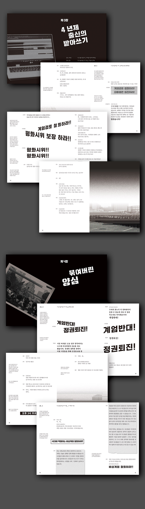
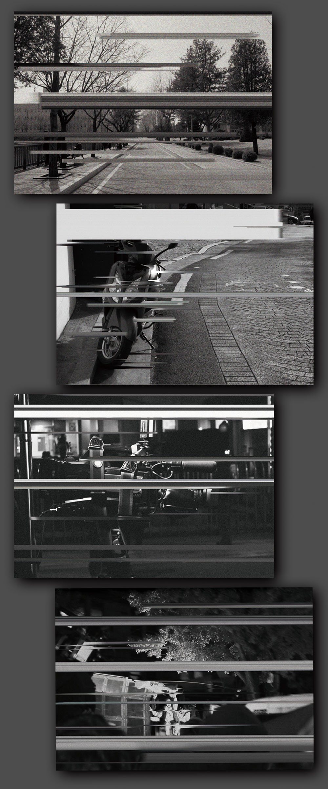
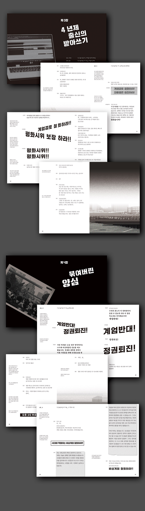
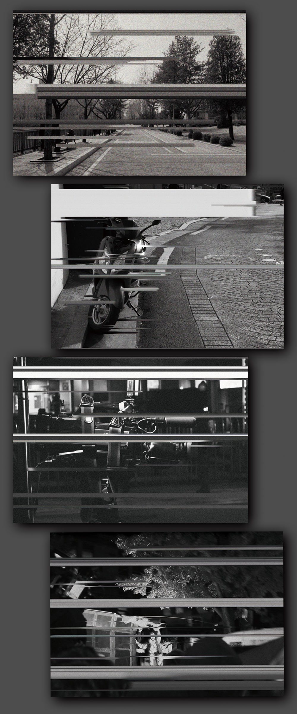

비상계엄_시나리오 2017
2017년 사상초유의 대통령 탄핵이 인용되었다. 이후 발견된 군 당국의 계엄문건은 세간에 큰 충격을 안겨주었다. 만일 탄핵이 기각되고 21세기 비상계엄이 실행되었다면 무슨 일이 벌어질까? 비상계엄 선포시 우리 일상에서 벌어질 영향과 사건들을 4명의 주인공을 통해 이야기를 그려내본다. 언론 등에 공개된 비상계엄문건의 내용을 바탕으로 4명의 인물에게 일어날 일들과 이들이 결국 우리 일상에까지 영향을 미칠 수 있다는 것을 가상역사물의 대본으로 제작했다.
이준호 junho960422@naver.com
 


